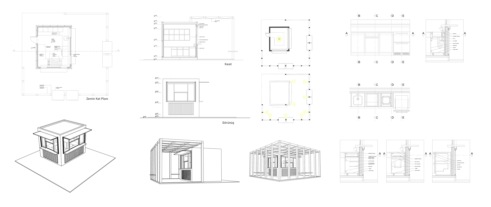

Üsküdar'da Kiosk
Kiosk/Büfe projesinin Üsküdar'da yapılması uygun görülmüştür. Çevresinde ahşap iskelet büfe için mekan oluşturma, sirkülasyonun sağlanması ve oturma alanları için yarı mahremiyet sağlama işlevleri için konmuştur. Proje dahilinde büfe tasarımı, aydınlatma planları ile mutfak tezgah detayları yapılmıştır. Yalın bir görüntü ile yapının çevre ile uyum sağlaması hedeflenmiştir.
